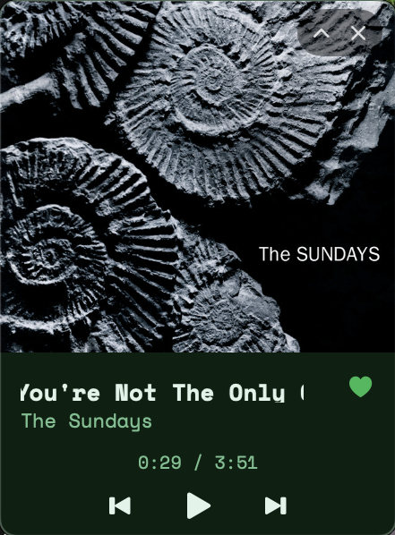
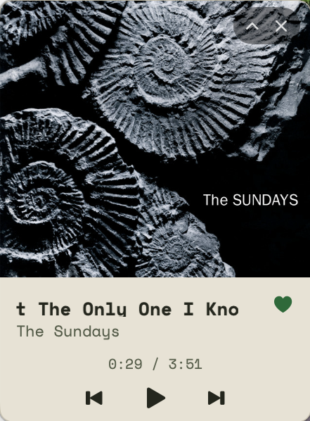
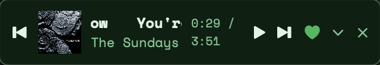
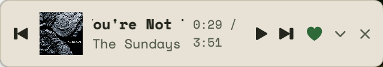

A small, always-on-top, draggable panel showing what's playing on Spotify — with playback controls and a one-click button to add the current song to your Liked Songs. No Dock icon, no browser tab, just the track.
🚧 Alpha — v1.0.0 is a first, working-but-rough cut. Expect bugs and breaking changes before a stable 1.0.
Real screenshots — the panel follows macOS's system appearance automatically.




Nothing more than a mini player needs.
Drag it anywhere on screen. Stays on top of other windows, on every Space.
Toggle layouts with the chevron on the panel itself — a slim bar or a full album-art view.
Track, artist, and artwork read straight from the Spotify desktop app. Long titles scroll in a looping marquee.
Previous, play/pause, next — right from the panel, no need to switch to Spotify.
The heart button adds the current track and reflects whether it's already liked.
Follows macOS's system appearance automatically — no toggle to manage.
A close button on the panel, next to expand/collapse — no digging through the menu bar.
No Dock icon. Right-click the panel itself to reach Log In/Out, layout, Settings, and Quit.
Requires macOS 13 or later, and the Spotify desktop app running.
brew tap peds24/tap brew trust peds24/tap brew install --cask da-miniplayer
Not notarized yet (no paid Apple Developer ID) — the cask clears the Gatekeeper quarantine flag on install so it opens normally.
DAMiniPlayer-v1.0.0.zip → /Applications
Download from the v1.0.0 release, unzip, and move DAMiniPlayer.app to /Applications. Since it's unsigned, right-click and choose "Open" the first time instead of double-clicking.
Liked Songs currently needs your Spotify account allow-listed by @peds24 (Spotify's Development Mode cap) — playback controls and now-playing info work for everyone. See the README for details.